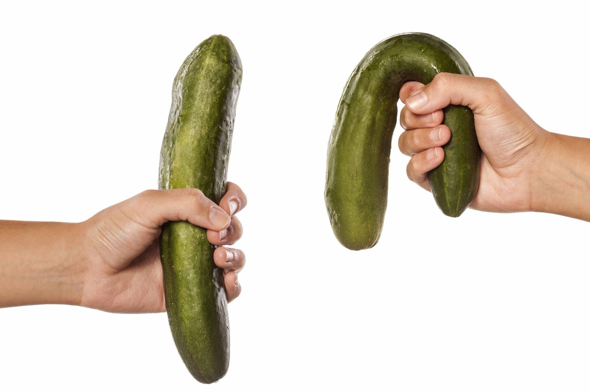

Relationships
Metodo testato per tenere la 'pistola carica', ovvero come tornare ad avere buone erezioni a qualsiasi età
Salve ragazzi.
Beh, chi è che voleva qualche racconto piccante? Preparate il libretto per gli appunti e scrivetevi questa ricetta per un’erezione di pietra ed un fazzoletto per piangere, nel caso la storia di uno stallone di Trent’anni che ha iniziato a fallire a letto possa toccarvi.
Scherzo, non ci sarà bisogno di prendere appunti.
FIno a 35 anni non mi sarei mai potuto immaginare che le parole 'sesso' e 'problemi' si sarebbero mai potute avvicinare. Ma la vita ha il suo senso dell’umorismo. E se prima riuscivo ad essere un eroe tra gli amanti, ora il destino ha deciso di prendermi in giro con risate da diavolo.
Primo fallimento
Venerdì, dopo il lavoro, abbiamo deciso di andare da un collega per guardare il calcio. Non ero un fan del campionato, ma non mi dispiaceva sostenere lo spirito patriottico e allo stesso tempo farmi qualche cicchetto
La serata tuttavia si è rivelata molto noioso. Per lo meno per tentare di salvare la festa ho proposto di chiamare qualche ragazza e di andare in sauna.
Lo spirito d’azzardo che mi è molto ben noto mi ha spinto a buttarmi sulla più bella, Elisa, che ha resistito a lungo, ma alla fine si è lasciata andare.
Le ragazze si sono ubriacate rapidamente, non mi sono neanche dovuto sforzare. Siamo finiti subito in via orizzontale. Abbiamo iniziato con un pompino da urlo, poi però se ne è uscita con un: 'Scopami ora!'.
Io ero ovviamente pronto, ma il mio pene ha deciso di lasciar perdere. 'Si, si, un minuto', mi sentivo un quindicenne che viene nei pantaloni appena vede una ragazza.
Ma vedendo i miei tentativi fallimentari di metterglielo dentro mezzo moscio mi ha chiesto con una voce alla Hitler cosa stesse succedendo, ed io sono riuscito solo a rimanere in silenzio.

Mi sentivo in una montagna di merda. Non era stato solo vergognoso, era una vera e proprio merda. Non mi era successa mai e poi MAI una cosa del genere.
Avrei potuto trovare una qualche scusa se questa situazione non si fosse ripetuta ancora dopo una settimana, e poi dopo un mese. Ormai ero fuori da i giochi..
Nervi? Non ero affatto nervoso. Alco? Non ero neanche ubriaco. Età? Ho 35 anni! Mi sono messo a cercare una possibile risposta su internet. E sono rimasto a bocca aperta.
Ho letto articoli scientifici popolari di gente finita in situazioni simili, e tutti affermavano come l’erezione fosse qualcosa di imprevedibile: oggi ti sta su come fossi un cavallo, e domani vai alle riunioni degli impotenti anonimi.
Certo una volta puoi fare cilecca per vari motivi, ma anche dopo una singola volta bisogna prendere qualche precauzione per tempo o la cosa si ripeterà praticamente all’infinito.
E se ci avete pensato, beh, il Viagra non ha alcuna relazione con le misure urgenti. Questa immondizia sintetica non solo crea dipendenza dalla pillola, ma nel risolvere solo parzialmente il problema può portare anche all'infarto.
Perché il pene non funzionava
Le causa, a quanto pare, possono essere veramente tante. La disfunzione erettile (l’impotenza) si sviluppa lentamente sulla base di:
- assunzione di alcol frequente,
- alimentazione scorretta,
- eiaculazione rara (meno di una volta ogni tre giorni),
- ingrassamento (comparsa della pancia da birra),
- abbassamento del testosterone.
Attorno ai 30 anni il cittadino italiano medio ha il testosterone al di sotto della media. Per questo motivo soffre la resistenza durante il sesso, la durata dello stesso sesso e la sua qualità.
E se invece prendiamo il Viagra, questi prodotti sintetici, anche se raramente, a 40 anni il pene praticamente diventa un pezzo di pelle inutile.

A proposito, il testosterone è responsabile non solo del sesso e dell’erezione, ma anche di tutto l'aspetto salutare maschile. Gli uomini che sembrano pasta scotta con la terza di seno e un la testa calva, nell'80% dei casi hanno questo aspetto a causa della mancanza di testosterone.

Cercando nelle profondità di internet ho trovato un forum in cui uomini di tutte le età condividevano le loro esperienze e le loro situazioni.
Levando le cose inutili, in molti parlavano di pillole tipo il viagra, che però a differenza di quest’ultimo erano naturali, sicure e perfino salutari per l’organismo, parliamo di .
Gli esperti hanno assicurato che lo strumento è testato e funziona davvero. Prendi due capsule, dopo 15 minuti ottieni l'effetto desiderato. Ma è meglio fare l'intero ciclo da una compressa al giorno per 4-6 settimane per aumentare il tono di tutto il corpo e per non preoccuparti per anni della forza dell’erezione.
Ho deciso di rivolgermi al problema con la Responsabilità giusta e ho preso 5 confezioni per fare un ciclo.

La seconda settimana ho avuto un’erezione di pietra che prima mi sarei potuto solo sognare. Avevo talmente tante energie che mi sarei potuto scopare tutta la città, e non avevo più forze per trattenermi.
Vittoria totale
Alla ricerca di una ragazza per la notta sono andato ad un pub, ma al posto di trovare una ragazza nuova ho incontrato nuovamente Elisa. La puttanella con cui sono iniziati i problemi.
Lei ha fatto finta di nulla, ed io per via della paura e del nervosismo mi sono fatto nell’attesa 10 bicchieri di birra. Ben gasato dall’alcol ho proposto ad Elisa di passare la sera da me.
Non so che piani abbia avuto, ma ha deciso di accettare. Proprio come l’altra volta, siamo arrivati al momento di scopare.
Questa volta però non mi si è abbassato, era di pietra nonostante l’alcol e il nervosismo, ed il suo orgasmo ne è stata la provaì.
Una maratona del sesso così lunga non l’avevo mai avuta. Era proprio come avevano promesso sul forum. Avevo il controllo sull’eiaculazione, l’erezione era duratura, avevo tanta resistenza e mi sentivo pieno di testosterone.

È stata una vittoria totale, ed ovviamente non è stata l’ultima. Da quando ho fatto il ciclo con sono passati 6 mesi. Non ho fallito più dopo quella volta, in qualsiasi circostanza.
Dove trovare
Ma ora la cosa più interessante. Si dice che il prezzo di queste pillole aumenti a vista d’occhio. Quindi ho due notizie. La cattiva è che il prezzo sarà enormemente maggiore tra un paio di mesi. La buona è che fino al 30.12.2019 sul sito del produttore sarà possibile acquistare un ciclo di al prezzo di una confezione. Raccomando vivamente di fare la scorta, in modo da non mordersi poi i gomiti.
Non è affatto la prima volta che ne sento parlare. Però ho paura, metti che mi casca il pisello
ah beh, Ciccio siamo nel 21mo secolo! È naturale ed è stato testato! Poi chissene, io lo prendo e funziona al 200%
merda, lo cercavo da un anno !!! L’ho usato una volta e mi ha cambiato la vita, ci sono tantissime vitamine. Un’erezione come a 15 anni! Grazie per l’articolo!
Ne ho ordinato una confezione sul sito, ho preso per stare meglio in generale, vediamo che ne viene fuori.
una bomba:)) Mia moglie la distruggo, lo facciamo anche 3 volte la notte senza problemi.
un ottimo articolo! Lo so che non consigliate cose inutili, ne prendo 5 confezioni. In offerta è molto economico
incredibile, scopo per ore, finché non svengo per la stanchezza:))
Prima si poteva trovare solo in America, ora a quanto pare si sono interessanti tutti:)) era ora